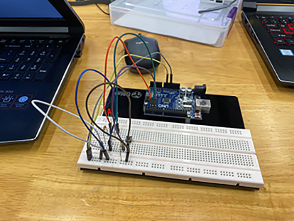

Embedded Programming
In this topic, we learnt more about how to program Arduinos, specifically using TinkerCAD as our main application. We were required to experiment and play around with different electrical components (like LEDs) that can interact with code stored in an Arduino.
Background Knowledge - Electrical Components
During the lessons, we learnt about a few electrical components that we may possibly use for our Final Year Project, which included LEDs, switches, motors and LCD displays. Here is a few things that I have learnt about these components:
LEDs
- LEDs have a long ping and a short pin which denotes the polarity of each side where the longer pin is the cathode and the shorter side is the anode.
- Too much current flowing into an LED will make it blow, so we need to use a resister so that the current is regulated.
- Find the forward current/voltage the LED can take so that we can order the right resistor for it (where it is denoted in the website shop)
Switches
- Used in keyboards, calculators, etc.
- The computer uses input and output ports that will work with the switches to sense voltage and thus produce an action.
- Signal resistors sense when a voltage is detected and thus will send a signal to the input and output ports
Programming
- Use // to make a comment so that you remember what the code is for
- setup and loop section: setup sections run only once while the loop section will loop forever
Hands-On Activity
In one lesson, each person from my class recieved a physical Arduino along with other electrical components like LEDs and a breadboard. Using the Arduino application, we had to program the Arduino Uno to power two lightbulbs, a red and green one I was successful in programming the Arduino, and the whole circuit worked properly!

I also learnt the flowchart of how code is programmed into the Arduino:
Editor
Source Code
Compile Error
Object code
Upload to board
Test board